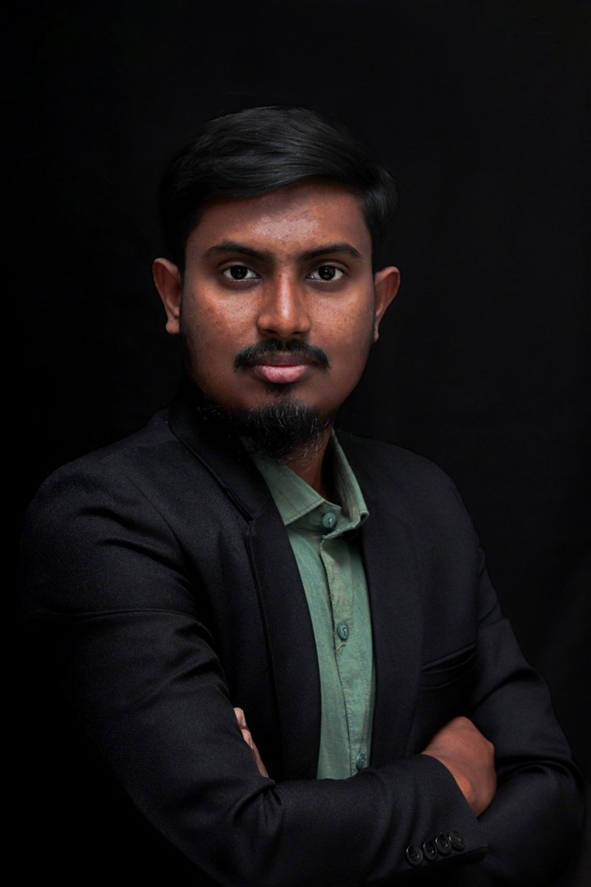

Investigating riverbank erosion, flood vulnerability, and livelihood impacts across Bangladesh's riverine communities. Grounded in field research, spatial analysis, and evidence-based scholarship.

I am a geographer and environmental researcher based in Pabna, Bangladesh, currently pursuing my MSc at Pabna University of Science and Technology. My research focuses on the intersection of natural hazards, human geography, and community resilience — particularly how riverbank erosion and flood events shape the livelihoods of vulnerable populations.
With over three years of field research experience, I have collected primary data across Kurigram, Bogura and Sirajganj districts using household surveys, KIIs, FGDs and PRA, mapped erosion with GIS and DSAS, and worked as a field researcher on a JSPS-funded international project led from Aoyama Gakuin University, Tokyo. My work has been presented at three conferences, one of them international, and one journal manuscript has been accepted in principle.
Beyond research, I have served as President of Konthoswor Abbritti Dol (PUST's recitation organization), Vice-President of the PUST Photographic Society and Green Voice, and Additional General Secretary of Chitro – Fine Art Society of PUST. I am now Associate Editor (Fiction) of the literary magazine Kothar Kagoj.
My interests span fiction and non-fiction reading, Bengali poetry, photography across multiple genres — nature, street, landscape, portrait, macro — and poem recitation, reflecting my belief in the inseparable link between art and science.
Whether you're interested in research collaboration, academic discussions, conference networking, or just want to say hello — feel free to reach out through any of the channels below.